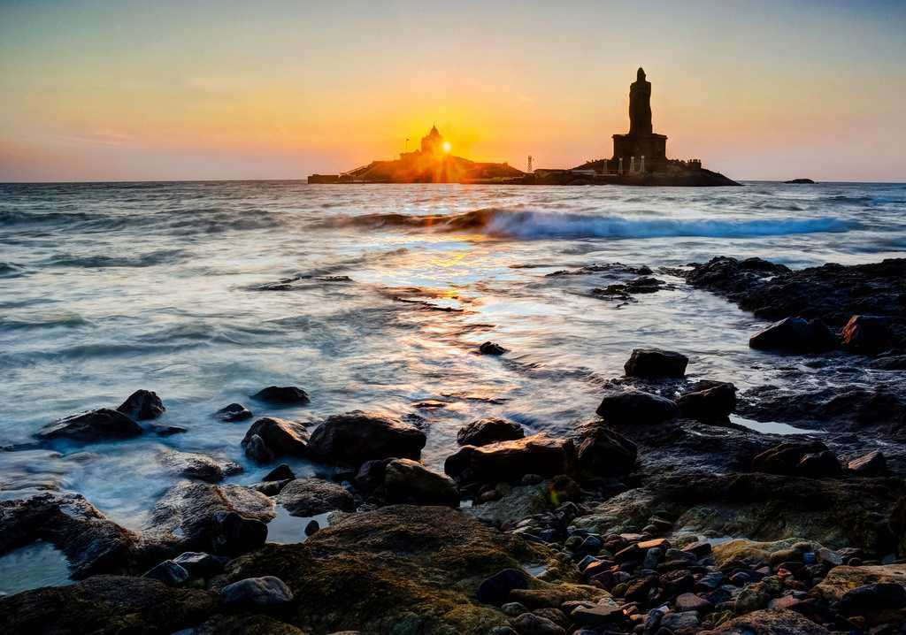

Ensconced in the southern fringes of Tamil Nadu,
Kanyakumari is unique in that the celestial
happenstance of sunset and moonrise can be seen
simultaneously.Boasting gems of natural wonders
and historical monuments, the city of Kanyakumari
enthrals one with its beauty and solitude. A large
number of visitors arrive in Kanyakumari for its
pristine and beautiful beaches. The locals relish
seafood delicacies though South India dishes like
dosas, idlis, vadas and utthapams are equally popular.

About Tour
Day 1:
Kanyakumari Beach
Vivekananda Rock Memorial
Thiruvalluvar Statue
Sarvani Shaktipeeth Shri Bhagavathy Temple
Sunset View Point
Day 2:
Vattakottai Fort
Sree Thanumalayan Temple
Padmanabhapuram Palace
Mathur Aqueduct